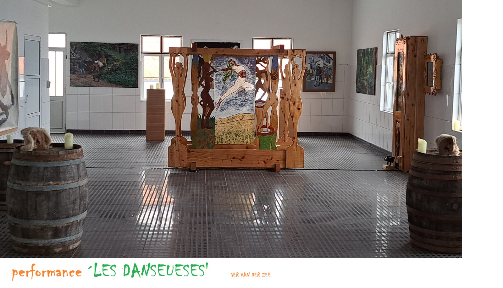
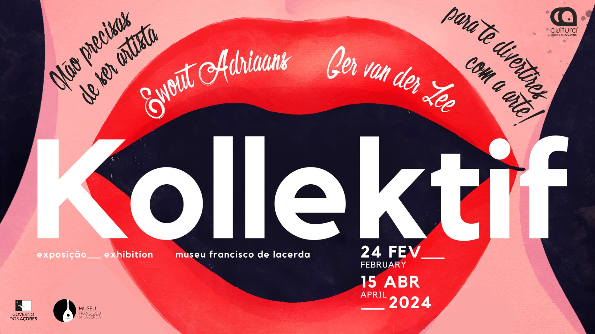
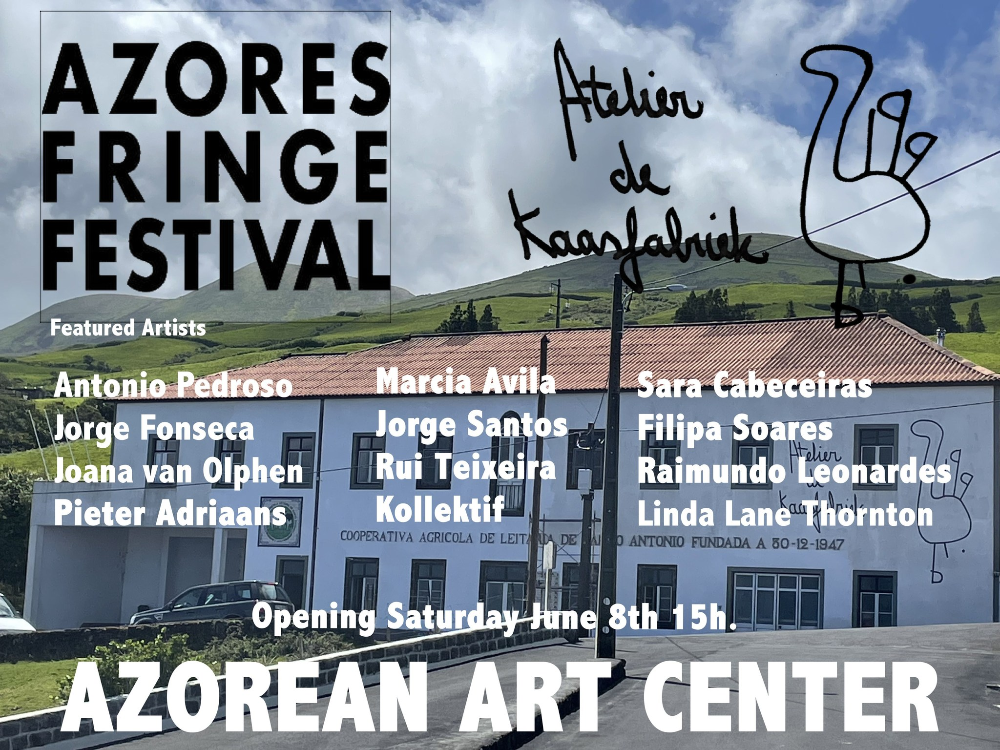

Expostion & perfomance 'Les Danseuses'
Ger created an installation ' Les Danseuses' that is exposed in 'atelier de Kaasfabriek' in Santo António on São Jorge. It exists of three components:
- Les danseuses tronqués ( beknot in de kast, as dançarinas restringidas, restraint dancers)
- Les danseuses restreints ( gekaderd, as dançarinas limitadas, limited dancers)
- Les danseuses livres ( vrij, as dançarinas livres, free dancers)

Exposition Kollektif 2024
The Francesco de Lacerda Museum is honoured to host the temporary exhibition “Kollektif”, which will be on view from February 24th to April 8th. Its inauguration will be on February 24th, at 3 pm and will be accompanied by a musical moment with Ewout Adriaans and Marcos Eltorete Fernandez Gardon, where they will present a unique and original musical composition.

Kollektif in museum Francesco Lacerda
Video of Ewout and Marcos playing at the opening of the expo Kollektif in museum Francesco Lacerda.
Expostion Fringe 2024
On June the 8th 15:00 @ Atelier de kaasfabriek.
We will have an exposition exposition of our latest works , and you can view them untill august.
Address: Santo Antonio, Velas 9800-153 São Jorge, Açores, Portugal.
